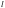
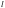

7. Code examples
The source tree of the interpreter also contains a set of short example programs. As a complement to the introduction given below, these programs can provide more concrete illustrative examples of how various common data-parallel computations can be implemented in the language:
A Worked Example: Feed-Forward ANN
We now show how the computation performed by a classical feed-forward network can be modeled in HERO-ML.
Background
An Artificial Neural Network (ANN) is a computational structure whose way of working is inspired by how the nervous system works in living beings. Such nervous systems typically have the following characteristics:
- they are composed out of many small, interconnected
units (the neurons),
- the interconnection is typically sparse, i.e., each neuron is
connected only to a few other neurons,
- each neuron has an activity level, which is a affected by the
activity levels of the neurons that it is connected to, and
- the activity level of a neuron is a highly non-linear function
of the activity levels of its connected neurons. In particular there are
thresholding effects caused by the activity level being saturated.
ANN's are mimicking this. There are many variations. A classical example is the McCulloch-Pitts neuron, where the activity level of a neuron is computed by thresholding a weighted sum of the activity levels of its neighbours. See Fig. 2.
![\includegraphics[scale=0.6, clip]{pitts.pdf}](images/img125.svg)
|
![\includegraphics[scale=0.6, clip]{layers.pdf}](images/img126.svg)
|
Feed-Forward Networks
In a feed-forward network the units are arranged in a number of
layers, where each interconnection goes from some layer  to
layer . See Fig. 3. There are three kinds of layers:
to
layer . See Fig. 3. There are three kinds of layers:
- an input layer, which provides the input to the ANN,
- a number of hidden layers, which contain units
interconnected between layers similarly to the McCulloch-Pitts neuron in
Fig. 2, and
- an output layer, which provides the output (or response) from
the ANN given a certain input.
Each unit in a hidden layer computes its output as a weighted, thresholded
sum of the outputs of the connected units in the previous layers,
similarly to the McCulloch-Pitts neuron in Fig. 2.
Mathematically, output from unit  in layer is computed as
in layer is computed as
 |
(1) |
in layer that are connected
to unit in layer .  is the weight of the connection
from in layer to in layer .
is the weight of the connection
from in layer to in layer .  is commonly chosen as the
sigmoid function, defined by
is commonly chosen as the
sigmoid function, defined by
| (2) |
![\includegraphics[scale=0.8, clip]{sigmoid.pdf}](images/img134.svg)
|
The weights are very important. They provide the knowledge that is stored in the network. Training the network means to set the weights in order to have a response from the network that is as close as possible to the desired output. A feed-forward network with hidden layers is a kind of Deep Neural Network (DNN), and training such a network is called deep learning. There are systematic methods, such as back-propagation, to do this, but we will not treat this further here.
Modeling of Feed-Forward Network Computing with Hero-ML
We will now show how to model one particular way of computing the output from a trained feed-forward network, given some input. We will use nested arrays, where the nesting reflects the structuring of the network into layers. More specifically z will be an array of arrays, where z[l] holds the output values of the units in layer l. The weights will be stored in an array of matrices w, where w[l] is a matrix where each element w[l][i,j] holds the weight for the connection from unit j in layer l-1 to unit i in layer l. The types of z and w are as follows:
z : Array int (Array int float) w : Array int (Array (int,int) float)Note that w[l] might be a sparse matrix, with a sparse bound. We assume that the arrays z and w themselves have dense bounds 0..n-1 and 1..n-1, respectively, where n is the number of layers. Fig. 5 shows an example with an input layer with three units, a hidden layer with five units, and an output layer with two units. We can note that the nested array representation easily can handle the fact that different layers can hold different numbers of units in feed-forward networks.
![\includegraphics[scale=0.7, clip]{arrays.pdf}](images/img135.svg)
|
We now give HERO-ML code for the computation. We use the following declarations:
s(x) = 1/(1 + exp (-x)) // sigmoid function sum(a) = reduce(+,a) // sum over abstract array(The current version of HERO-ML does not have functions, but we can see these declarations as macros.) We assume that the input to the computation is stored in the array
input. First, the input layer z[0] is assigned this
array. Then the code loops over the other layers, computing z[l]
from a matrix-array multiplication of z[l-1] and w[l]
followed by a thresholding of the elements in the resulting array:
z[0] = input;
l = 1;
while l < n do
z[l] = forall i -> s(sum(forall j -> (w[l][i,j] * z[l-1][j])));
l = l + 1
This version creates a new abstract array for each array assignment. As an
alternative we can instead use a foreach statement, which performs
an in-place update:
foreach i in bound(z[0]) do z[0][i] = input[i];
l = 1;
while l < n do
foreach i in bound(z[l]) do
z[l][i] = s(sum(forall j -> (w[l][i,j] * z[l-1][j])));
l = l + 1
What if we instead choose to use flat (non-nested) arrays? z then
turns ito a matrix, and w becomes a three-dimensional tensor. Their
types will now be as follows:
z : Array (int,int) float w : Array (int,int,int) floatFor each iteration
l, row l in z will now be
updated. This is accomplished by a foreach statement where the
elements to be updated are selected from this row. We obtain the following
code:
foreach i in bound(forall j -> z[0,j]) do z[0,i] = input[i];
l = 1;
while l < n do
foreach i in bound(forall j -> z[l,j]) do
z[l,i] = s(sum(forall j -> (w[l,i,j] * z[l-1,j])));
l = l + 1
Here the l'th row is extracted using a
A disadvantage with flat arrays is that if z has a dense bound (a
regular matrix) then all layers will be modeled to have the same number of
units. There are of course ways around this, but the nested array approach
still seems to provide a better fit.